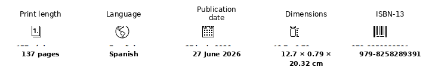

Novel · speculative present · catastrophe
El año que solo hubo primavera
An anomalous spring, a company that manufactures intimacy, and a man trying to find his way through mediated relationships, emotional simulations and an increasingly unstable city.
Jorge enters an environment where loneliness can become a service and intimacy a product. Psychotherapy, social networks, desire and technology converge in an Alicante subjected to a climate that stops behaving as it should.
The novel does not simply equate the artificial with the false. Its conflict emerges when a manufactured experience produces real emotional effects and forces a decision about the value of something whose origin we know, but whose consequences have already become part of life.
Edition details

Excerpt
«Nadie parecía interesado por otra cosa que celebrar esta ociosa despreocupación. Solo de vez en cuando la gente recordaba el viento y una congoja trémula atravesaba un instante la euforia para luego desaparecer.»